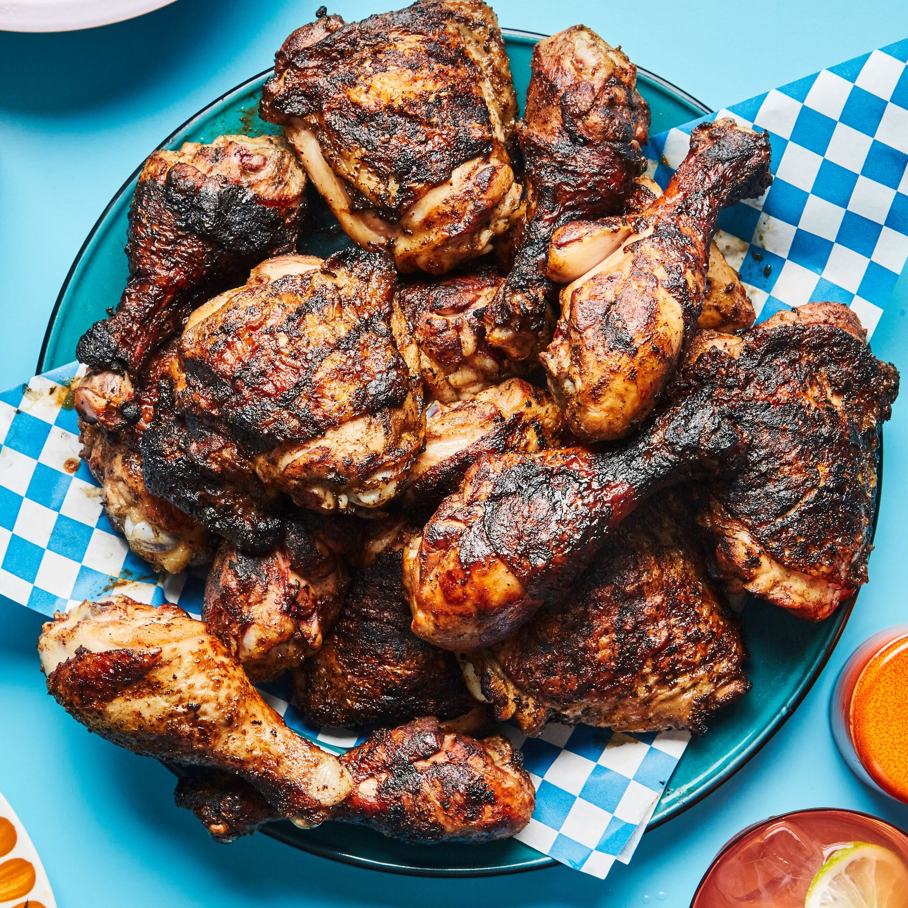

Jerk Chicken

Jerk Chicken from bonappetit.com
Description
I like Jerk Chicken for its flavour and tenderness. It has a great kick and saltiness that works amazing with regular white rice or rice with peas.
Ingredients
- 1 cup orange juice
- 1 cup white vinegar
- 1/2 cup olive oil
- 1/2 cup soy sauce
- 1 juiced lime
- 3 chopped onions
- 6 scotch bonnet chiles, chopped
- 8 chopped garlic cloves
- 2 tablespoons white sugar
- 2 tablespoons dried thyme
- 2 tablespoons ground allspice
- 2 tablespoons salt
- 2 tablespoons ground pepper
- 1 teaspoon ground cinnamon
- 1 teaspoon ground nutmeg
- 1 teaspoon ground ginger
- 3 pung bone-in chicken breast halves with skin
Steps
- Blend orange juice, vinegar, olive oil, soy sauce, lime juice. Add onions, scotch bonnet chiles, garlic, sugar, thyme, allspice, salt, black pepper, cinnamon, nutmeg, ginger. Pulse to mix and blend until pureed.
- Set 1/2 up marinade aside in a small bowl and refrigerate. Pour marinade over chicken in a non-reactive bowl and stir to coat. Refrigerate for 8 hours to marindate.
- Preheat grill for medium-low heat and lightly oil
- Cook chicken until not pink inside, skin is browned, instant read meat thermometer inserted in thickest part of breast meat reads at least 160 degrees F. Baste meat as it cooks.